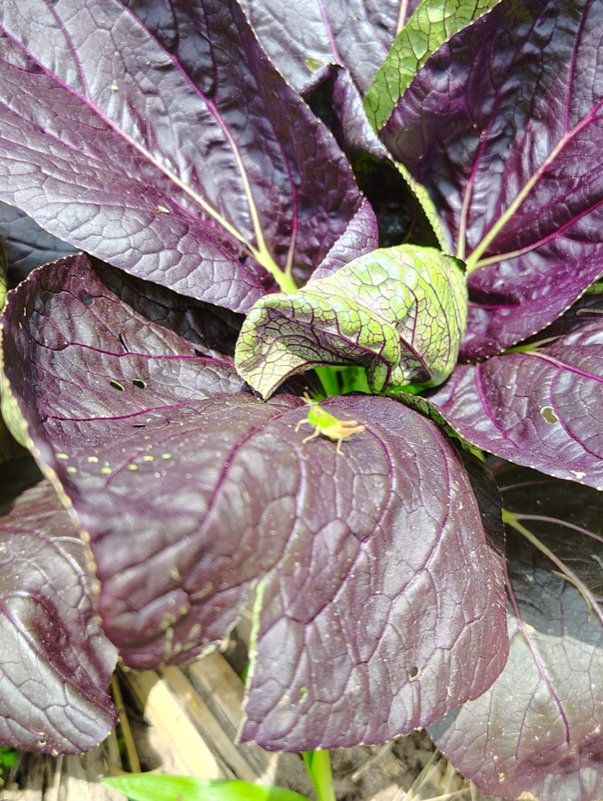
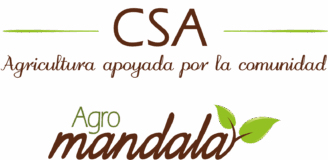
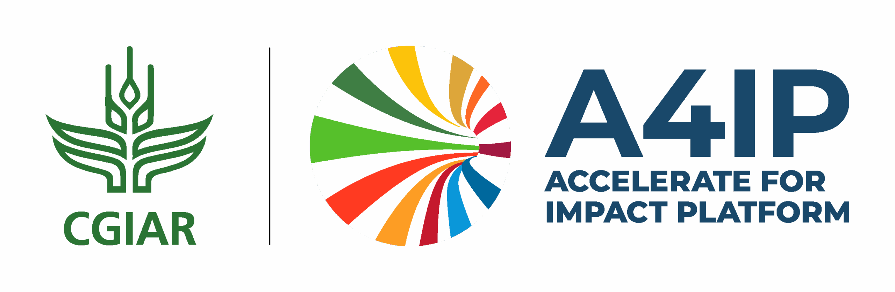

Explorar
Somos una organización sin ánimo de lucro que articula un movimiento ciudadano que incentiva la agroecología, el consumo consciente y la regeneración de las relaciones entre el campo y la ciudad.
A través de la cocreación de Comunidades que Sustentan la Agricultura, apoyamos a familias agricultoras y co-agricultoras en todo el territorio colombiano.

Las CSA son un modelo donde familias co-agricultoras financian la producción de una familia agricultora, garantizando una retribución justa y constante, una alimentación sana y una forma de producción que cuida de la tierra.
Consumidores y agricultores se relacionan directamente, creando un sistema alimentario más justo, fraterno, local y responsable.
De manera práctica, las CSA funcionan como un modelo de suscripción donde las familias co-agricultoras financian la producción y reciben alimentos frescos directamente desde la finca.
Familias urbanas se comprometen a cubrir cuotas de producción agroecológica. Con esto, el agricultor puede planificar sus siembras con tranquilidad y certeza económica.
.jpg)
La familia agricultora produce alimentos frescos, diversos y de temporada. Al conocer quiénes recibirán los alimentos, el vínculo trasciende la transacción económica.
.jpg)
Las familias reciben su canasta de alimentos semanalmente o cada quince días. Los riesgos y beneficios de la producción se comparten entre toda la comunidad.

Inspiradas en los principios globales de las Comunidades que Sustentan la Agricultura
Valorar el trabajo agrícola más allá del dinero, reconociendo su profundo valor social y ambiental.
Construir vínculos de solidaridad y transparencia que sustenten una relación duradera y recíproca.
Al planificar juntos la producción y el consumo, reducimos significativamente el desperdicio en toda la cadena.
Consumir lo que la tierra da en cada temporada, reconectando con los ritmos naturales del campo colombiano.
.jpg)




Soy co-agricultor
Quiero recibir alimentos
Cada CSA es única — diferente tierra, diferentes cultivos, diferente comunidad. Encuentra la que está cerca de ti.
Ver todas las CSAs →
Soy Agricultor
Cultivo alimentos
Si eres agricultor o agricultora y quieres conocer cómo iniciar tu propia Comunidad que Sustenta la Agricultura, descarga nuestra guía paso a paso.
↓ Descargar Guía PDF Hablemos
Agricultores
Familias co-agricultoras vinculadas
Hectareas en agroecología
Especies de alimentos y semillas cultivadas
CSAs activas conectando familias agricultoras y co-agricultoras en distintos rincones de Colombia.
Con presencia principalmente en Antioquia, Cundinamarca, Valle del Cauca y otros departamentos del país.
Visitas a fincas, talleres, encuentros de la red y días de campo para conectar consumidores y agricultores.
julio 12 @ 8:00 am – 1:00 pm
julio 19 @ 9:00 am – 3:00 pm
julio 26 @ 10:00 am – 12:00 pm
agosto 2 @ 9:00 am – 5:00 pm
agosto 16 @ 8:00 am – 5:00 pm
Personas apasionadas por la agroecología, el territorio y la construcción de comunidad.
Cada CSA define su canasta según la producción de temporada. En general, recibes hortalizas, frutas, aromáticas, tubérculos y otros productos agroecológicos frescos. La frecuencia puede ser semanal, quincenal o mensual, dependiendo de la CSA que elijas. Siempre es lo que la tierra da en ese momento del año.
El valor varía por CSA, el tamaño de la canasta y la frecuencia de entrega. El modelo CSA propone que el precio cubra los costos reales de producción y garantice una retribución justa al agricultor. Cada CSA define su valor junto a su comunidad, por lo que te invitamos a contactar directamente a la CSA de tu interés.
Tenemos CSAs en varios municipios del país, principalmente en Antioquia y otras regiones. Para suscribirte necesitas estar cerca de una CSA activa. Consulta nuestro mapa para encontrar la más cercana a ti. Si no hay una cerca, ¡puedes apoyar la creación de una nueva en tu comunidad!
En un mercado orgánico compras lo que hay disponible en el momento. En una CSA, tú co-financias la producción de antemano, compartiendo los riesgos y beneficios con el agricultor. Esto crea una relación de confianza y compromiso mutuo que va más allá de la transacción comercial: es una alianza entre ciudad y campo.
Descarga nuestra guía para agricultores donde explicamos el proceso paso a paso. También puedes escribirnos a contacto.csacolombia@gmail.com o contactarnos por WhatsApp. Te acompañamos desde el inicio en la construcción de tu comunidad CSA.


Tu aporte nos ayuda a fortalecer la red, acompañar nuevas CSAs y difundir la agroecología en Colombia.
Después de tu transferencia, escríbenos a contacto.csacolombia@gmail.com o por WhatsApp con el comprobante. ¡Gracias!